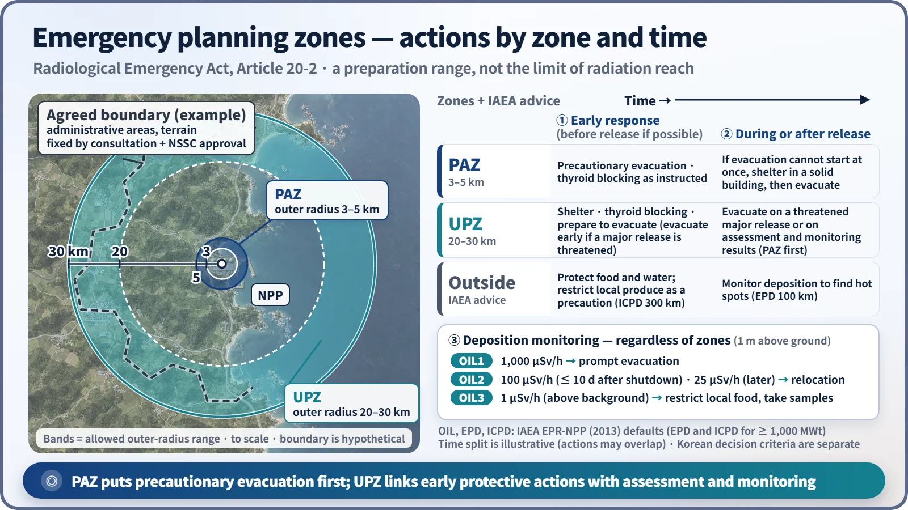
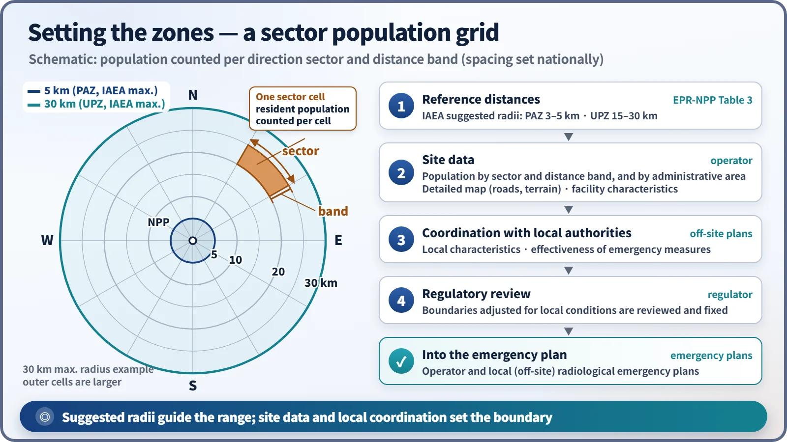
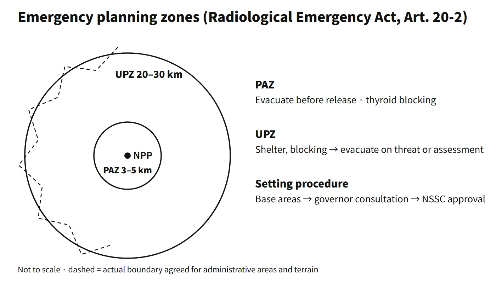

Radiation Protection & Emergency · C-RP-004
Emergency Planning Zones (PAZ, UPZ) — Two-Tier Public Protection Planning around a Nuclear Power Plant
Why public protection is planned in two tiers, how suggested radii become actual boundaries, and what has to be considered when setting them.
Emergency planning zones are areas around a nuclear facility where arrangements are prepared in advance and intensively so that residents can be protected if a nuclear emergency occurs. In the IAEA framework (GSR Part 7) the area around a power reactor is divided into the precautionary action zone (PAZ) and the urgent protective action planning zone (UPZ), complemented by the extended planning distance (EPD) and the ingestion and commodities planning distance (ICPD).
Put simply: the PAZ (IAEA suggested radius 3–5 km) is centred on evacuation in advance, and the UPZ (15–30 km) on urgent protective actions based on assessment.
Principle and mechanism
Why two tiers
The means of reducing public dose in a severe accident are evacuation, sheltering, thyroid-blocking agents (stable iodine), relocation and food restrictions. Which of these works best depends on distance and time.
- PAZ (close in): residents could receive high doses within a short time once a release begins. The aim is to evacuate as a precaution before the release, on the basis of the facility state alone (a General Emergency declaration), without waiting for measurements, to prevent severe deterministic effects.
- UPZ (further out): the impact varies greatly with direction and weather. Sheltering and thyroid-blocking agents come first; the extent of evacuation and relief is then decided from radiological impact assessment and environmental monitoring results. If a major release is strongly threatened, however, evacuation can go ahead without waiting for measurements.
Distance criteria and how the zones are set
Table 3 of IAEA EPR-NPP (2013) gives suggested maximum radii as a first approximation, based on a representative release from severe fuel damage:
| Zone or distance | ≥ 1,000 MWt | 100–1,000 MWt |
|---|---|---|
| PAZ | 3–5 km | 3–5 km |
| UPZ | 15–30 km | 15–30 km |
| EPD | 100 km | 50 km |
| ICPD | 300 km | 100 km |
These radii may be adjusted by site analysis and local conditions. In the United States, 10 CFR 50.47(c)(2) sets a plume exposure pathway EPZ of about 10 miles (16 km) and an ingestion pathway EPZ of about 50 miles (80 km), likewise adjusted for local conditions such as population, terrain and jurisdictional boundaries.
In practice a zone is turned from a reference radius into an actual area in a few steps:
- Reference distances are taken from the suggested radii (they may be differentiated by facility characteristics such as thermal power).
- The operator compiles site data: population distribution, road network and terrain, and facility characteristics.
- The zone boundaries are coordinated with the local authorities that will carry out off-site protective actions, considering local characteristics and the effectiveness of emergency measures.
- The boundaries are reviewed by the regulator and written into the operator's and the local (off-site) radiological emergency plans.

The actual boundary is not an exact circle but follows administrative areas and terrain (in practice, whether a given town or district is included becomes the issue). So even for the same plant, the outer radius can differ by direction.
What it means in a plant
Protective actions by zone and time
Table 4 of IAEA EPR-NPP (2013) recommends the following when a General Emergency is declared:
- PAZ: immediate iodine thyroid blocking (ITB, without delaying evacuation) and safe evacuation to beyond the UPZ
- UPZ: immediate sheltering and ITB; if a major release is possible, evacuation to beyond the UPZ without delaying the PAZ evacuation (step by step according to wind direction, etc.)
- People who are difficult to evacuate (hospitals, care homes, etc.): ITB and sheltering in large buildings. "Safe evacuation" means evacuation that does not endanger the lives of those being evacuated.
After a release, measurements are compared with operational intervention levels (OILs), and actions are extended or reduced regardless of the zone boundaries. The default values are based on the dose rate 1 m above the ground.
| OIL | Default value | Action |
|---|---|---|
| OIL1 | 1,000 μSv/h | Immediate evacuation; stop consumption and distribution of local food |
| OIL2 | 100 μSv/h (within 10 days of shutdown), 25 μSv/h (after 10 days) | Relocation within 1 week to 1 month |
| OIL3 | 1 μSv/h | Restrict consumption of non-essential local food, milk and rainwater; analyze samples |
What has to be considered when setting the zones
- Population distribution out to the maximum radius: population of each cell of a polar grid of directional sectors and distance bands, and population by administrative area
- A detailed map showing administrative areas, the road network, and terrain such as mountains and rivers
- Facility characteristics such as purpose of installation and thermal power
- Effectiveness factors: capacity and bottlenecks of evacuation routes, vulnerable facilities such as schools and hospitals, constraints on evacuation direction due to coastlines or mountains, the integrity of administrative boundaries (whether whole towns or districts are included), and the systems for warnings, shelters and distribution of protective drugs

Regulatory and design criteria
The references below are international and US examples.
- IAEA: GSR Part 7 (2015) requires the PAZ and UPZ together with the EPD and the ICPD. The suggested maximum radii in Table 3 of EPR-NPP (2013), for 1,000 MWt and above, are PAZ 3–5 km, UPZ 15–30 km, EPD 100 km and ICPD 300 km. The generic criteria are 100 mSv in the first 7 days (evacuation, sheltering), 50 mSv thyroid in the first 7 days (ITB) and 100 mSv per year (temporary relocation).
- United States: 10 CFR 50.47(c)(2) sets a plume exposure EPZ of about 10 miles (16 km) and an ingestion EPZ of about 50 miles (80 km).
- Lessons from Fukushima: before the accident Japan's EPZ was about 8–10 km. Right after the accident the evacuation order was widened step by step from 3 to 10 to 20 km, and a sheltering order was issued for 20–30 km; later some areas beyond 20 km were designated as deliberate evacuation areas. Japan changed to a PAZ of about 5 km and a UPZ of about 30 km in 2012, and some other countries moved from single zones to two-tier zones in the same way. Health effects during the evacuation of vulnerable people were also reported, which is why the principle of "safe evacuation" is emphasized.
Easily confused pairs
| PAZ | UPZ | EAB, LPZ | Radiation controlled area | |
|---|---|---|---|---|
| Purpose | Precautionary public protection before release | Assessment-based urgent public protection | Site suitability (distance) | Managing worker exposure |
| Basis | Emergency preparedness requirements (IAEA GSR Part 7) | Emergency preparedness requirements (IAEA GSR Part 7) | Siting criteria | Radiation protection regulations |
| Extent | IAEA suggested radius 3–5 km | IAEA suggested radius 15–30 km | Calculated from dose criteria | Inside the facility |
| Key actions | Evacuation, thyroid-blocking agents | Sheltering, evacuation and relief after assessment | None (design evaluation) | Access control, dose monitoring |
The size of a zone is not the limit radiation can reach but the extent of advance preparation. Actual actions can extend beyond the zones depending on the situation and the OILs.
Key points at a glance
- Definition: areas where emergency arrangements are prepared intensively to protect residents in a nuclear emergency.
- Structure (IAEA GSR Part 7): PAZ and UPZ, plus EPD and ICPD.
- PAZ: suggested radius 3–5 km. Precautionary evacuation and thyroid-blocking agents on the facility state before release → prevent severe deterministic effects.
- UPZ: suggested radius 15–30 km. Initial actions such as sheltering and drugs; evacuation and relief based on radiological impact assessment and environmental monitoring results (or a threatened major release).
- Further distances: EPD 100 km and ICPD 300 km (≥ 1,000 MWt); after a release, actions are adjusted with OILs (1,000 / 100 or 25 / 1 μSv/h).
- Setting: reference radii → site data (population by sector and distance band, roads, terrain, thermal power) → coordination with local authorities → regulatory review → emergency plans; effectiveness of emergency measures is checked.
- Boundary: follows administrative areas and terrain; the radius can differ by direction.
- US comparison: plume exposure EPZ about 10 miles (16 km), ingestion EPZ about 50 miles (80 km).
- Background: the Fukushima accident showed the limits of a single zone of about 10 km.
- Distinction: different from the EAB and LPZ (siting) and from the radiation controlled area (workers); the radii are preparation ranges, not radiation limits.
